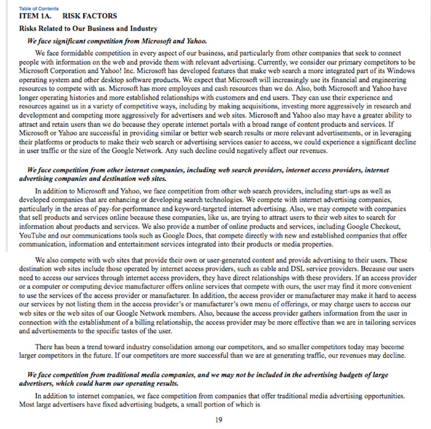

Figure 6.2 Possible Research Resources

The ideal is to know a job for its day-to-day activities and over time, so you have both an immediate and longer-term perspective. It is helpful to talk to someone experienced in the job, as he or she will have a broad perspective. We will cover researching information by speaking directly to people in the informational interview section later in this chapter. However, remember that every live interaction, even if the intent is information gathering, is a possible job interview. So you want to do some research before speaking to anyone to present yourself in the best light. Here are several resources to familiarize yourself with a job:
Job boards publish job descriptions that are great sources for the responsibilities, activities, and requirements of jobs. You also may be able to get some compensation information there. Job boards often also publish career information. Some resources are free but others are paid, and most boards offer both. For example, Vault.com offers “Day in the Life” write-ups of different types of jobs. People in the actual jobs write these, and they write them in diary style from the time they start their day until the time they go home. Monster.com offers Career Snapshots where they list different types of jobs with the job’s definition and statistics on historical and future growth. The Occupational Outlook Handbook (http://www.bls.gov/oco) is published every two years by the Bureau of Labor Statistics and details more than 250 jobs, including descriptions of the job and the hiring outlook.
Trade or professional associationsAssociations that represent people in a specific job. represent people in a specific job. Depending on the job, there can be many different associations. Accountants can join the American Institute of Certified Public Accountants, the Association of Chartered Certified Accountants, and other accounting associations. You want to find one relevant to your target job. Associations will likely have member publications and statistics that can give insight into growth prospects, compensation statistics, and other trends in that job. Trade and professional news groups often cover who is coming and going and who has been promoted within their member companies. Often these news releases summarize people’s backgrounds en route to that job. To find trade or professional associations for your targets, look at the Encyclopedia of Associations, a reference set available at the library. You can also look for professional associations online at http://www.weddles.com/associations/index.cfm.
Biographies and business and news profile stories can give insight into day-to-day activities and the arc of a career. Stand-alone biographies are typically written for the most senior positions, but still might mention different functional areas. For example, One Day, All Children is the story of Wendy Kopp and the founding of Teach For America. In the strictest sense, it provides insight into starting a nonprofit. The book also mentions the different areas of the organization, which is helpful to anyone interested in nonprofit and education. There are also anthologies of biographies that might profile various business owners, marketers, or financiers. These show a range of careers. Finally, magazines and newspapers often profile people’s careers and backgrounds. Look at Fortune, BusinessWeek, Inc., and Fast Company for career profiles. Sometimes publications profile top lists, such as Crain’s 30 Under 30, where you can see a summary of profiles.
LinkedIn (http://www.linkedin.com) is a social media site aimed at professionals who want to share information about their work and education backgrounds. You can search using specific keywords, such as accountant or grant writer, to find profiles of people who have jobs you want. You can then look at their profiles to see their education, early jobs, how they describe their jobs, and other skills and information. LinkedIn also has groups, some of which are organized around specific types of jobs. You can read discussions and view profiles to get a better sense for that profession. In addition to LinkedIn, there are niche career sites, such as eFinancial Careers for finance or MediaBistro for media that post articles about job trends.
Finally, some university career services offices have a physical and online library of resources. These offices are open to students and often to alumni.
The same resources you use for information about jobs are also useful for information about organizations. Job boards often have information about the organizations in their job postings and also in the career information sections. Another benefit of browsing job postings is that you may get ideas for organizations that are not household names. In addition to Vault.com and Monster.com, which have mainly private sector jobs, you want to look at USAJOBS (http://www.usajobs.gov/), the federal government’s official job site for information on public sector jobs. Idealist (http://idealist.org) is a good resource for nonprofit jobs.
Trade or professional associations usually have member directories, which are not just useful for finding people (at the networking stage in step 4) but also good for finding companies. A local chamber of commerce can help identify companies in a specific geography.
Business and news publications do profiles of organizations as well as people. These publications often produce top lists that also are useful organizational resources. Fortune magazine lists the largest companies in its Fortune 500 issue. It then segments the companies by geography and industry and profiles select companies. Fortune also tracks Most Admired Brands, Top Companies to Work For, and other categories. Fast Company lists the most innovative companies. Inc. lists the fastest-growing private companies. These lists are a great way to familiarize yourself with individual organization names and their relationship within their peer groups.
Organizations create groups or pages on social media sites, such as LinkedIn and Facebook. You can follow these groups or pages to get breaking news about your organizations of interest. By looking at profiles attached to these organizations, you can get a feel for the culture and environment.
For financial information on organizations, you have several options:
Figure 6.3 Sample 10-K Financial Statement
Again, some of the resources helpful to job and organization information also are helpful for industry information: job boards, trade and professional associations, business and news publications, and social media and online communities. In addition, you want to look at industry-specific associations and online communities.
Even after you do overall research on a specific job, organization, or industry, you need to be able to track any current events or developments. You can consciously remember to search the Internet for news and media mentions of jobs, organizations, and industries of interest, or you can set up an automatic search via Google AlertsA way of searching for news stories on the Internet using specific keywords, phrases, or names for Google to search on and send back to you on a daily or weekly basis.. With Google Alerts, you can select specific keywords, phrases, or names for Google to search on and send back to you (daily or weekly) with Internet mentions containing those keywords, phrases, or names. You want to use this sparingly and with very specific search terms because you may receive too many results. At the same time, this is a very useful tool to ensure that you capture the latest developments for jobs, organizations, or industries you are closely following.
Figure 6.4 Sample Google Alert